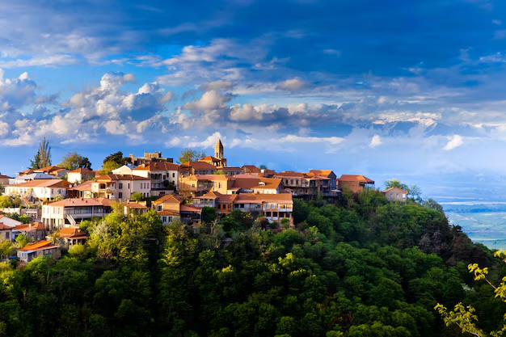
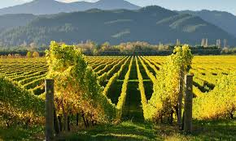
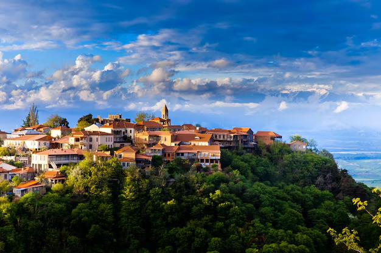
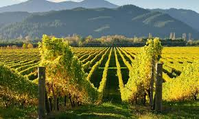

Тур по Тбилиси
Откройте для себя Тбилиси с этим туром, который проведёт вас по самым значимым достопримечательностям города. Вы узнаете об истории и культуре столицы Грузии, пока гид покажет вам такие места, как церковь Метехи, монументальная скульптура Матери Картли и крепость Нарикала.
Тур включает:
Собор Святой Троицы — один из крупнейших храмов в мире и центральный кафедральный собор Грузинской православной церкви.
Далее трансфер в современный район Тбилиси, по пути мимо проспекта Руставели и здания парламента Грузии, пока вы не достигнете площади Свободы, впечатляющей статуей Святого Георгия и архитектурой XVIII–XIX веков.
Тур продолжится в церкви Метехи (около XIII века), средневековом здании на берегу реки Куры (Мтквари), охраняемом памятником царю Вахтангу Горгасалу, который, согласно легенде, владел мечом весом 16 килограммов при жизни.
Пройдите по Мосту Мира через реку Кура, который соединяет парк Ри́ки. Мост построен в 2010 году, длина — 155 метров, дизайн разработан известным архитектором Микеле де Луки.
Из популярного парка Ри́ки канатная дорога ведёт к крепости Нарикала (IV век), старейшей цитадели Грузии и лучшему месту для панорамных видов на город и ботанические сады. Рядом находится 20-метровая статуя Матери Картли (Mother of Georgia).
Прогулка по Старому городу, крупнейшему району города. По пути обратите внимание на Джума-мечеть — одну из немногих мечетей в мире, где проводятся службы для обоих исламских направлений — шиитов и суннитов.
Откройте для себя оригинальный и впечатляющий «Мост влюблённых» под тенью 22-метрового водопада Легвтахеви.
Пройдите исторический район Абанотубани, по пути увидите знаменитые серные бани Тбилиси, которые, согласно легенде, тесно связаны с основанием города.
Выход из Старого города и прогулка по улице Жан Шарден (Jean Chardin), полной уютных кафе, баров с дегустацией вин и сувенирных магазинов.
Вход в кафедральный собор Сиони (около VII века), чтобы полюбоваться его внутренними золотыми и бирюзовыми фресками.
Фотосъёмка у Кардуно-комического наклонного часового башни Тбилиси, которая отмечает место известного театра марионеток Резо Габриадзе.
Восхищение перед базиликой Анчисхати (VI век), грузинского православного кафедрального собора и старейшего храма Тбилиси.
Далее трансфер в отель или при желании вы можете самостоятельно продолжить исследование Старого города. Конец тура по Тбилиси.

.png)

 English
English
 ქართული
ქართული
 Chinese
Chinese
 



 - 7 ночей и 8 дней
- 7 ночей и 8 дней - Тбилиси, Мцхета, регион Кахети и Гудаури
- Тбилиси, Мцхета, регион Кахети и Гудаури